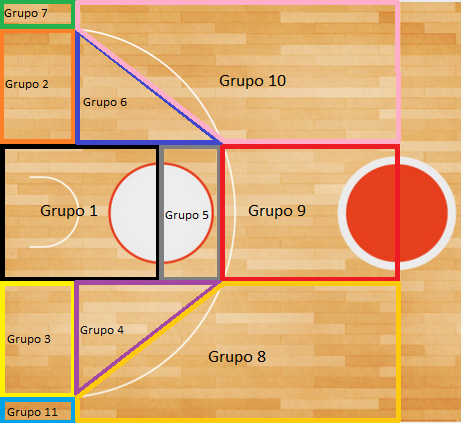

import pandas as pd
import os
from funciones_auxiliares import *
import warnings
warnings.filterwarnings('ignore')
3.3 Estadísticas totales de tiro#
Las estadisticas totales de tiro, es la volumetría de tiro del jugador en función de la zona espacial de la pista de baloncesto en la que realiza los tiros durante un partido, una serie de partido o una o varias temporadas. En este notebook se buscará dar explicación de manera entendible y visualizada a todo el procesamiento realizado para la construcción de estas estadísticas a través de los siguientes puntos:
1. Base teórica de la construcción de las estadísticas. Se realizará la explicación teórica de los pasos realizados para la construcción de este tipo de estadísticas.
2. Procesamiento de los datos. Se realizará la explicación guiada del procesamiento de los datos para la construcción de las estadísticas totales.
A través de esos puntos se realizará la comprensión y entendimiento del trabajo realizado para la construcción de las estadísticas totales.
1. Base teórica de la construcción de las estadísticas#
Como ha sido comentado al principio de este notebook, las estadísticas totales de tiro, es el tipo de información que representa la volumetría de tiros anotados y lanzados en diferentes espacios de la pista de baloncesto por un jugador durante un periodo de tiempo. Para la construcción de este tipo de estadística, es necesario tener la información referente a las cartas de tiro de un jugador a lo largo de una temporada. Como ha sido explicado en el apartado Descarga de las Cartas de tiro., han sido descargadas todas las cartas de tiro realizadas por los equipos y jugadores que participaron durante los encuentros de las temporadas 2019-2020, *2020-2021’, 2021-2022 y 2022-2023 las cuales serán utilizadas para la construcción de las estad´sticas totales de tiro para cada jugador en cada temporada.
Para la construcción de este tipo de estadísticas, en primer lugar, ha sido creado un procesamiento por el cual cada uno de los tiros ha sido asignado a un espacio diferente de cada mitad de pista de balonesto. Los espacios en los que ha sido definida cada mitad de la pista de baloncesto han sido 11 los cuales son los siguientes:

Estos espacios pueden englobarse de la siguiente manera:
Pintura. Se engloban todos los lanzamientos capturados en el Grupo 1 que se corresponde con los realizados desde dentro de la zona.
Media distancia. Se engloban todos los lanzamientos realizados en los grupoas 2, 3, 4, 5 y 6, y son aquellos realizados desde fuera de la zona sin sobrepasar la línea de 3 puntos.
Tiros frontales de 3. Se engloban todos los lanzamientos realizados en los grupos 8, 9 y 10, y son aquellos que se realizan cercanos a la línea de 3 pero de dos puntos y los tiros de tres.
Tiros de esquina de 3. Se engloban todos los lanzamientos realizados en los grupos 7 y 11, y son aquellos que se realizan desde las esquinas por detrás de la línea de tres puntos.
Tras este procesamiento en el que las cartas de tiro son asignadas a cada uno de los espacios en los que ha sido dividida la mita de pista, se realiza el sumatorio de todos los tiros realizados por cada jugador en cada equipo de una misma temporada para la construcción de las estadísticas totales de tiro.
Para la construcción de las estadísticas totales de tiro ha sido desarrollado el script de código 02_Procesamiento_CARTA_TIRO el cual permite la lectura de todas las cartas de tiro de los encuentros disputados por los equipos y se procede a la construcción de este tipo de estadística.
2. Procesamiento de los datos#
Como ha sido explicado en el apartado anterior, para la construcción de las estadísticas totales, es necesario realizar primero el procesamineto de las cartas de tiro descargadas de la página web de la competición. Para ello, se realiza la carga de las cartas de tiro realizadas por Sergio Llull durante la temporada *2022-2023+ en el Real Madrid:
# Ruta para acceder a la información del Real Madrid en la temporada 2022
ruta_equipo = 'E:/TFM/02. Datos/ACB/EQUIPOS/2022/Real Madrid'
# Se definen parámetros para la ejecución
df_jugador = pd.DataFrame()
l_partidos = os.listdir(ruta_equipo)
equipo = 'Real Madrid'
jugador = 'S. Llull'
for partido in l_partidos:
ruta_dir_partido = ruta_equipo + '/' + partido
l_elementos = os.listdir(ruta_dir_partido)
# Se realiza la selección de los ficheros y la carga de ellos
nombre_fichero_equipo = [elem for elem in l_elementos if equipo in elem and 'VS' not in elem and 'CARTA_TIRO' in elem][0]
df_fichero_equipo = pd.read_csv(ruta_dir_partido + '/' + nombre_fichero_equipo, sep=';')
# Se realiza la selección del registro del jugador y del equipo rival
df_fichero_jugador = df_fichero_equipo[df_fichero_equipo['NOMBRE'] == jugador]
df_jugador = pd.concat([df_jugador,df_fichero_jugador])
print("################################################################################")
print("# ESTADISTICAS EN CADA PARTIDO JUGADO DE SERGIO LULL EN LA TEMPORADA 2022-2023")
print("################################################################################")
print("Nº de columnas:", len(df_jugador.columns))
print("Nº de registros:", len(df_jugador))
print("\n",df_jugador.head(20).to_string(index=False, col_space=8))
################################################################################
# ESTADISTICAS EN CADA PARTIDO JUGADO DE SERGIO LULL EN LA TEMPORADA 2022-2023
################################################################################
Nº de columnas: 5
Nº de registros: 148
D NOMBRE href x y
23 S. Llull #visitor-in 352.995412 95.250000
23 S. Llull #visitor-in 404.902507 145.150000
23 S. Llull #visitor-out 358.914806 87.450000
23 S. Llull #visitor-out 389.860501 228.866667
23 S. Llull #visitor-in 359.813955 70.533333
23 S. Llull #visitor-out 355.711589 69.333333
23 S. Llull #visitor-out 351.065989 191.416667
23 S. Llull #visitor-in 381.524645 58.966667
23 S. Llull #local-in 61.690019 152.000000
23 S. Llull #local-out 144.823794 206.150000
23 S. Llull #local-in 163.724645 90.700000
23 S. Llull #local-out 155.576112 81.366667
23 S. Llull #visitor-out 458.289451 158.016667
23 S. Llull #visitor-out 358.165516 57.783333
23 S. Llull #visitor-in 473.406386 160.200000
23 S. Llull #local-out 77.743567 146.033333
23 S. Llull #local-out 47.378571 179.000000
23 S. Llull #local-in 111.442904 164.050000
23 S. Llull #local-out 65.942242 190.216667
23 S. Llull #visitor-out 438.264664 136.916667
Como se puede observar, han sido descargados 148 registros que corresponden a todos los tiros realizados por Sergio Llull a lo largo de la temporada *2022-2023+. Para el procesamiento de esta información, se hará uso de las columnas x e y que permiten identificar la posición espacial dentro de la pista de baloncesto en la que fue realizado el tiro, y se utilizará la columna href ya que en esta se indica si fue canasta con el valor de in o fallo con el valor de out. Es por esto que se pasa a mostrar el procesamiento de esta carta de tiro:
print("################################################################################")
print("# PROCESAMIENTO DE CARTA DE TIRO DE SERGIO LULL EN LA TEMPORADA 2022-2023")
print("################################################################################")
df_jugador_precesado = procesar_CT(df_jugador)
print("Nº de columnas:", len(df_jugador_precesado.columns))
print("Nº de registros:", len(df_jugador_precesado))
print("\n",df_jugador_precesado.to_string(index=False, col_space=1))
################################################################################
# PROCESAMIENTO DE CARTA DE TIRO DE SERGIO LULL EN LA TEMPORADA 2022-2023
################################################################################
Nº de columnas: 20
Nº de registros: 1
D NOMBRE GRUPO 1_IN GRUPO 1_OUT GRUPO 10_IN GRUPO 10_OUT GRUPO 11_OUT GRUPO 2_IN GRUPO 2_OUT GRUPO 3_IN GRUPO 3_OUT GRUPO 4_IN GRUPO 4_OUT GRUPO 5_IN GRUPO 5_OUT GRUPO 6_OUT GRUPO 8_IN GRUPO 8_OUT GRUPO 9_IN GRUPO 9_OUT
23 S. Llull 19 24 9 20 1 1 2 2 3 1 4 2 7 1 7 25 9 11
Como se puede observar, se ha creado un único registro el cual muestra todos los tiros lanzados por Sergio Llull a lo largo de esta temporada en donde para cada grupo se han diferenciado los tiros en IN cuando fue canasta y en OUT cuando fallo. Este procesamiento ha sido realizado para cada uno de los jugadores en cada una de las temporadas dando como resultado un tablero de información para cada equipo en el que se muestran las cartas de tiro procesadas para cada jugador:
# Ruta para acceder al fichero de estadísticas de tiro totales del Real Madrid
fichero_total_2022 = 'E:/TFM/02. Datos/ACB/ESTADISTICAS/2022/Real Madrid/02_ESTADISTICAS_CARTA_TIRO_EQUIPO.csv'
# Se realiza la carga de los ficheros de estadísticas totales
df_totales_2022 = pd.read_csv(fichero_total_2022, sep = ';')
print("##################################################################################")
print("# ESTADISTICAS TOTALES DE LOS JUGADORES DEL REAL MADRID EN LA TEMPORADA 2022-2023")
print("##################################################################################")
print("Nº de columnas:", len(df_totales_2022.columns))
print("Nº de registros:", len(df_totales_2022))
print("\n",df_totales_2022.to_string(index=False, col_space=1))
##################################################################################
# ESTADISTICAS TOTALES DE LOS JUGADORES DEL REAL MADRID EN LA TEMPORADA 2022-2023
##################################################################################
Nº de columnas: 24
Nº de registros: 18
D NOMBRE GRUPO 1_IN GRUPO 1_OUT GRUPO 10_IN GRUPO 10_OUT GRUPO 11_IN GRUPO 11_OUT GRUPO 2_IN GRUPO 2_OUT GRUPO 3_IN GRUPO 3_OUT GRUPO 4_IN GRUPO 4_OUT GRUPO 5_IN GRUPO 5_OUT GRUPO 6_IN GRUPO 6_OUT GRUPO 7_IN GRUPO 7_OUT GRUPO 8_IN GRUPO 8_OUT GRUPO 9_IN GRUPO 9_OUT
0 N.Williams-Goss 34.0 25.0 4.0 9.0 0.0 1.0 0.0 3.0 0.0 4.0 1.0 0.0 4.0 4.0 3.0 3.0 0.0 0.0 6.0 7.0 6.0 6.0
1 F. Causeur 48.0 40.0 5.0 22.0 3.0 2.0 2.0 7.0 4.0 3.0 1.0 2.0 0.0 0.0 0.0 1.0 2.0 2.0 20.0 24.0 1.0 7.0
3 A. Randolph 4.0 5.0 4.0 5.0 0.0 0.0 0.0 2.0 0.0 0.0 0.0 1.0 0.0 1.0 3.0 2.0 0.0 0.0 2.0 3.0 0.0 4.0
5 R. Fernández 3.0 2.0 2.0 5.0 0.0 0.0 0.0 1.0 2.0 1.0 1.0 0.0 0.0 0.0 0.0 0.0 0.0 0.0 10.0 9.0 3.0 4.0
6 A. Abalde 23.0 16.0 4.0 12.0 0.0 0.0 1.0 4.0 2.0 4.0 0.0 1.0 1.0 1.0 2.0 2.0 0.0 1.0 10.0 15.0 3.0 14.0
7 H. González 1.0 0.0 0.0 0.0 0.0 0.0 0.0 0.0 0.0 0.0 0.0 0.0 0.0 0.0 0.0 0.0 0.0 0.0 0.0 0.0 0.0 0.0
8 A. Hanga 23.0 13.0 6.0 11.0 0.0 0.0 0.0 3.0 0.0 1.0 0.0 1.0 0.0 0.0 0.0 2.0 0.0 1.0 2.0 8.0 5.0 6.0
11 M. Hezonja 40.0 30.0 14.0 30.0 0.0 2.0 5.0 4.0 9.0 5.0 0.0 4.0 1.0 2.0 1.0 1.0 2.0 1.0 18.0 23.0 7.0 9.0
13 S. Rodríguez 17.0 12.0 9.0 14.0 0.0 0.0 4.0 3.0 0.0 0.0 0.0 3.0 4.0 6.0 0.0 3.0 1.0 1.0 12.0 11.0 6.0 13.0
14 G. Deck 63.0 39.0 3.0 6.0 0.0 2.0 0.0 2.0 0.0 2.0 1.0 1.0 0.0 1.0 3.0 1.0 1.0 0.0 6.0 6.0 2.0 1.0
17 V. Poirier 76.0 50.0 0.0 0.0 0.0 0.0 1.0 6.0 0.0 3.0 0.0 2.0 1.0 1.0 0.0 1.0 0.0 1.0 1.0 0.0 2.0 0.0
19 E. Demin 0.0 0.0 0.0 0.0 0.0 0.0 0.0 1.0 0.0 0.0 0.0 0.0 0.0 0.0 0.0 0.0 0.0 0.0 0.0 0.0 0.0 1.0
21 P. Cornelie 26.0 18.0 5.0 13.0 1.0 2.0 2.0 8.0 4.0 7.0 0.0 0.0 0.0 0.0 0.0 1.0 0.0 3.0 4.0 15.0 2.0 1.0
22 W. Tavares 118.0 43.0 0.0 0.0 0.0 0.0 1.0 0.0 0.0 1.0 1.0 1.0 2.0 3.0 0.0 3.0 0.0 0.0 0.0 0.0 1.0 0.0
23 S. Llull 19.0 24.0 9.0 20.0 0.0 1.0 1.0 2.0 2.0 3.0 1.0 4.0 2.0 7.0 0.0 1.0 0.0 0.0 7.0 25.0 9.0 11.0
28 G. Yabusele 77.0 47.0 9.0 16.0 1.0 0.0 3.0 8.0 4.0 8.0 0.0 1.0 0.0 3.0 1.0 1.0 0.0 4.0 10.0 15.0 6.0 6.0
30 E. Ndiaye 12.0 6.0 0.0 3.0 0.0 0.0 0.0 4.0 2.0 3.0 1.0 1.0 0.0 1.0 0.0 1.0 0.0 1.0 0.0 4.0 1.0 0.0
31 D. Musa 83.0 55.0 14.0 17.0 1.0 1.0 2.0 4.0 0.0 1.0 0.0 0.0 1.0 0.0 1.0 1.0 0.0 1.0 28.0 24.0 12.0 17.0